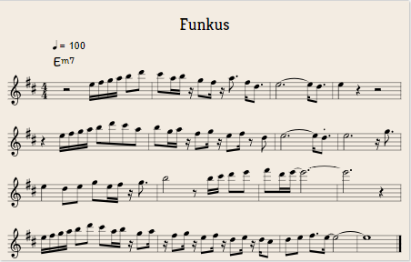

https://editor.drawthedots.com/?t=X%3A1%0AT%3AFunkus%0AL%3A1%2F4%0AM%3A4%2F4%0AQ%3A100%0AI%3Alinebreak%20%24%0AK%3AD%0A%20%22Em7%22z2%20e%2F4f%2F4g%2F4a%2F4%20b%2Fd'%2F%20%7C%20c'%2Fa%2F4b%2F4%20z%2F4%20g%2Ff%2F4%20z%2F4%20a3%2F4%20f%2F%3Cd%2F%20%7C%20e3-%20e%2F%3Cd%2F%20%7C%20e%20z%20z2%20%7C%20%254%0A%20z%20e%2F4f%2F4g%2F4a%2F4%20b%2Fd'%2Fc'%2Fa%2F%20%7C%20b%2Fg%2F4a%2F4%20z%2F4%20f%2Fg%2F4%20z%2F4%20e%2Ff%2F4%20z%2F%20d%2F%20%7C%20e3-%20e%2F%3C.d%2F%20%7C%20e3%20z%2F4%20g3%2F4%20%7C%20%258%0A%20e%20d%2Fe%2F%20g%2Fe%2F4f%2F4%20z%2F4%20g3%2F4%20%7C%20b2%20z%2F%20b%2F4c'%2F4%20d'%2Fe'%2F%20%7C%20f'%2Fd'%2F4e'%2F4-%20e'3-%20%7C%20e'3%20z%20%7C%20%2512%0A%20e%2F4f%2F4g%2F4a%2F4%20b%2Fd'%2F%20c'%2Fa%2F4b%2F4%20z%2F4%20g%2Fa%2F4%20%7C%20z%2F4%20f%2Fg%2F4%20z%2F4%20e%2Ff%2F4%20z%2F4%20d%2Fe%2F4%20z%2F4%20d%2F4c%2F%20%7C%20d%2Fe%2F%20f%2F%3Ee%2F-%20e2-%20%7C%20e4%20%7C%5D%20%2516%0A
X:1
T:Funkus
L:1/4
M:4/4
Q:100
I:linebreak $
K:D
"Em7"z2 e/4f/4g/4a/4 b/d'/ | c'/a/4b/4 z/4 g/f/4 z/4 a3/4 f/
z e/4f/4g/4a/4 b/d'/c'/a/ | b/g/4a/4 z/4 f/g/4 z/4 e/f/4 z/ d/ | e3- e/<.d/ | e3 z/4 g3/4 | %8
e d/e/ g/e/4f/4 z/4 g3/4 | b2 z/ b/4c'/4 d'/e'/ | f'/d'/4e'/4- e'3- | e'3 z | %12
e/4f/4g/4a/4 b/d'/ c'/a/4b/4 z/4 g/a/4 | z/4 f/g/4 z/4 e/f/4 z/4 d/e/4 z/4 d/4c/ | d/e/ f/>e/- e2- | e4 |] %16